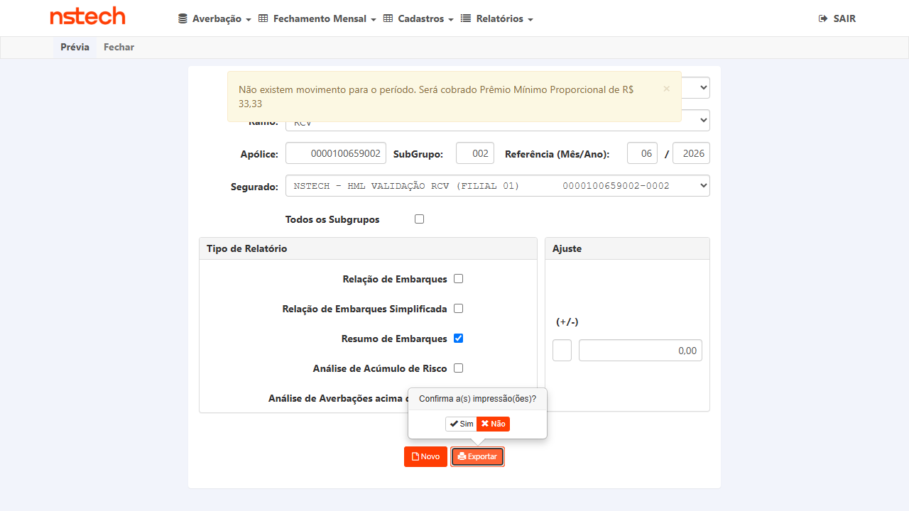
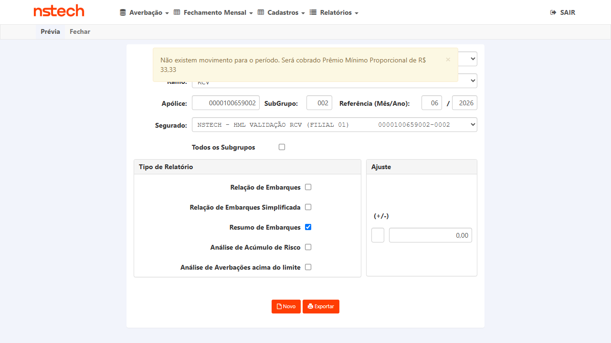
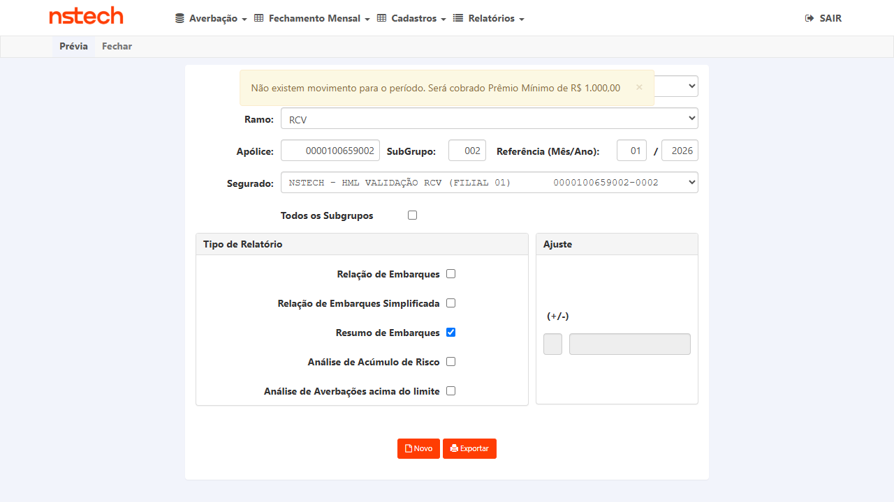
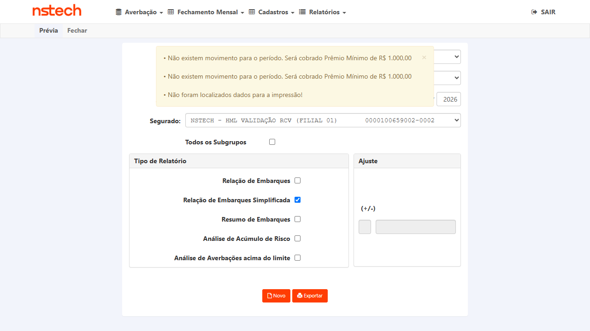
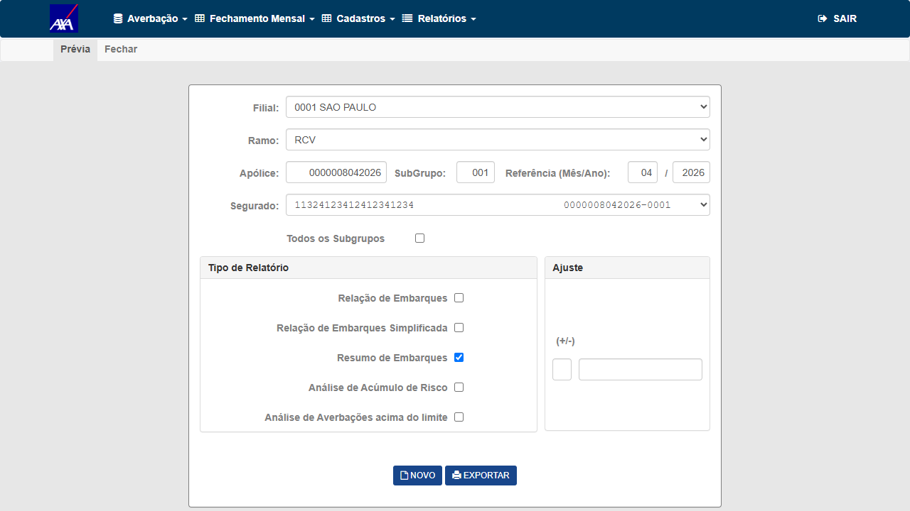
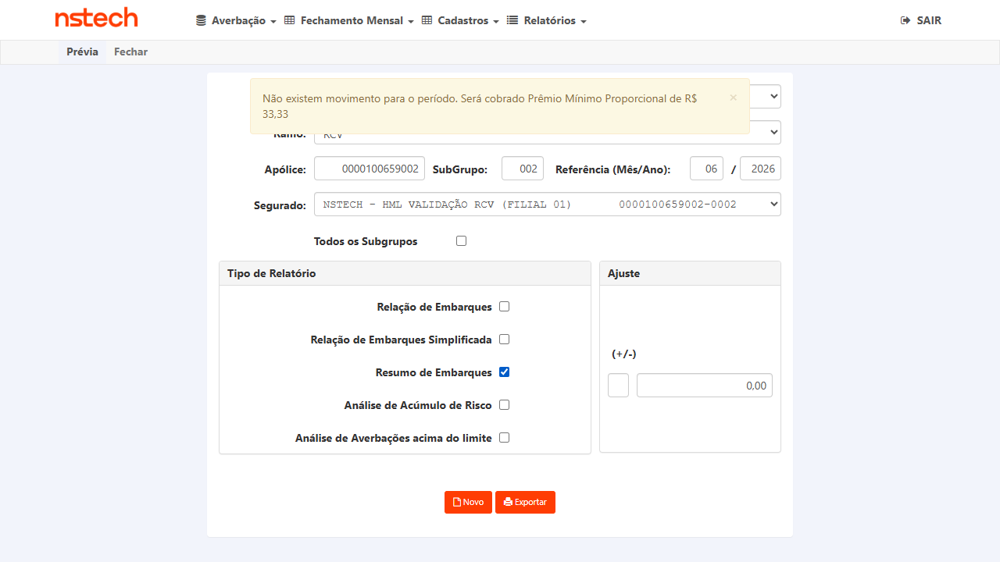

Ao gerar o relatório Resumo de Embarques da Prévia (Nacional → Fechamento Mensal → Prévia), o sistema retorna "Ocorreu um erro inesperado" em vez de baixar o arquivo. O cenário é específico do ramo 59 (RCV) na base HML da Tokio Marine.
Cenário atual: Nacional → Fechamento Mensal → Prévia → informar os dados da tela → selecionar Resumo de Embarques → Exportar → pop-up de confirmação "Confirma a(s) impressão(ões)?" → Sim → retorna o erro.
Cenário desejado: após confirmar a impressão, o relatório Resumo de Embarques deve ser gerado e baixado na máquina do usuário, sem erro.
Motivação (do card): validação do CITWEB em HML da Tokio — o cliente irá validar APIs, e uma delas usa o relatório Resumo de Embarques como comparativo. O bug precisa ser corrigido antes do início dos testes do cliente.
Provável causa (em investigação pelo dev): a análise inicial aponta para dado ausente/nulo na base HML da Tokio (coluna de tarifa/prêmio por viagem sem valor em determinado movimento) que faz o handler do relatório lançar exceção genérica. Confirmar contra o fix quando publicado — não é fato fechado, apenas hipótese registrada.
Fix validado em HML: causa-raiz confirmada era o indicativo Ind_tb_pmo_min_apo_fch ativo sem a tabela tb_pmo_min_apo_fch existir na base Tokio (PremioDomain.ObtemPremioMinimoNacional → Invalid object name → "erro inesperado"). Desativado o indicativo, o Exportar do Resumo de Embarques voltou a funcionar.
Invalid object name 'tb_pmo_min_apo_fch', agora baixa RESUMO-RCV-...xlsx sem "erro inesperado"./RelatorioPrevia foi confirmado sem regressão via AXA (cross-tenant).27.0RK.3G5/0001-69) + averbação 2026000002 (SP→RJ). O Resumo baixou RESUMO-RCV-0000270350001-001-07-2026.xlsx com o CNPJ alfanumérico íntegro (Segurado/CNPJ/Corretor), sem truncar/converter/overflow. 6/7 APROVADO, 0 reprovado (só CT-REM-005 N/A — Tokio só tem ramo RCV)."7896 — está ok, mas se possível testar com massa que o CNPJ seja alfanumérico." Plano aprovado no Gate 1. Diretriz incorporada: adicionado o CT-REM-007 — gerar o Resumo de Embarques com massa cujo CNPJ (segurado/tomador/embarcador) seja alfanumérico (novo formato Receita), validando que o relatório gera sem erro e traz o CNPJ alfanumérico íntegro no arquivo. Segue para validação de Produtos (Gate 2). A execução continua condicionada ao deploy do fix em HML (ver box acima).
In scope: geração e download do relatório Resumo de Embarques na Prévia do Fechamento Mensal para apólices RCV (ramo 59) na HML da Tokio, garantindo que o arquivo é gerado sem "Ocorreu um erro inesperado"; distinção entre erro real e ausência legítima de dados; regressão dos relatórios vizinhos e de outros ramos/seguradoras.
Out of scope: demais telas do Fechamento Mensal não relacionadas ao relatório; a validação das APIs do cliente que consomem o relatório (fora do CITWEB); cálculo de prêmio (tratado no BUG #7884, ticket distinto).
Ramo: 59 (RCV). Ambiente: CITWEB HML Tokio Marine — tokio-hml-faturamento.nsseg.com.br. Credenciais: no card AzDO / .env (bloco Credenciais HML) — não reproduzidas neste plano (repositório público).
smt-hom-citweb-tokio); liberdade total em HML para criar/ajustar massa se necessário. Fluxo confirmado em features/Nacional/Fechamento Mensal/Previa.feature e endpoint /Nacional/RelatorioPrevia (campo indResumoEmbarques).Downloaded file RESUMO-RCV-0000100659002-002-06-2026.xlsx; nenhum "Ocorreu um erro inesperado". Reconfirmado em 2ª variante PMM (ref 01/2026) e cross-tenant AXA com movimento real. Evidências: 7896-01/02/03 + arquivos XLSX.Reproduzir exatamente o fluxo do card e confirmar que o relatório Resumo de Embarques é gerado e baixado, sem retornar "Ocorreu um erro inesperado".
.env/card).ResumoEmbarque, cabeçalho "RESUMO DE EMBARQUES RCV / PRÉVIA", apólice/subgrupo/referência corretos):Regra obrigatória de CT de relatório/download: a evidência é o próprio arquivo. Validar que não veio vazio/corrompido e que traz o conteúdo do resumo de embarques.
tb_pmo_min_apo_fch). Com a apólice 0000100659002 / sub 002 / ref 06-2026 (sem movimento no período), o sistema exibe o aviso informativo "Não existem movimento para o período. Será cobrado Prêmio Mínimo Proporcional de R$ 33,33" e baixa o arquivo normalmente — não retorna "Ocorreu um erro inesperado". Evidência: 7896-02 (banner) + XLSX. Garantir que o fix distingue "sem dados para imprimir" (comportamento esperado, informativo) de uma falha genérica — a ausência de dados não pode continuar caindo em "Ocorreu um erro inesperado".
7896-05.O relatório vizinho da Prévia RCV (Relação de Embarques Simplificada, PBI-7137) não pode ter sido quebrado pelo fix.
/Nacional/RelatorioPrevia foi confirmado sem regressão via AXA (CT-REM-006, tenant com múltiplos ramos e a tabela tb_pmo_min_apo_fch existente). Como o fix foi config-only e escopo Tokio (desativar indicativo na base Tokio), os demais ramos das outras bases não são afetados.O handler /Nacional/RelatorioPrevia é compartilhado; garantir que o fix (originado no cenário RCV) não regrediu o Resumo de Embarques dos ramos que já funcionavam.
Downloaded file RESUMO-RCV-0000008042026-001-04-2026.xlsx, com linhas de embarque reais, sem "erro inesperado". Prova adicional de banco: a tabela tb_pmo_min_apo_fch EXISTE na AXA — por isso a AXA nunca teve o bug (o erro era Invalid object name, que só ocorre onde a tabela não existe = Tokio). Evidência: 7896-06 + XLSX AXA.Confirmar que o fix é seguro entre seguradoras — o Resumo de Embarques da Prévia RCV continua gerando em outra base (AXA), onde já funcionava.
0000270350001 (segurado/corretor CNPJ 27.0RK.3G5/0001-69 = 270RK3G5000169, criada por Wesley) + averbação RCV criada pelo QA (nº 2026000002, SP→RJ, prêmio 4.000,00, DM 49.999,99 / DC 29.999,99 — fluxo completo Nacional → Averbação RCV, sem depender de terceiros). Prévia RCV → Resumo de Embarques → Exportar → Sim → baixou RESUMO-RCV-0000270350001-001-07-2026.xlsx (8.822 B). Validado via openpyxl: o CNPJ alfanumérico aparece ÍNTEGRO em três campos do arquivo — Segurado: 27.0RK.3G5/0001-69, CNPJ: 27.0RK.3G5/0001-69, Corretor: 27.0RK.3G5/0001-69 — sem truncar, sem converter para número, sem o overflow Int64 do #7887. Embarques reais no arquivo (AC→SP + SP→RJ, TOTAIS 2 viagens / Prêmio 8.000,00). Evidências: 7896-11..16 + XLSX anexado ao card.Confirmar que o relatório Resumo de Embarques da Prévia RCV é gerado sem erro quando a massa contém CNPJ alfanumérico, e que o CNPJ aparece íntegro no arquivo (não truncado, não convertido para número, sem "erro inesperado").
| Critério de aceite | CT(s) |
|---|---|
| Resumo de Embarques da Prévia RCV (ramo 59) é gerado sem "erro inesperado" | CT-REM-001 |
| Arquivo gerado é íntegro, não-vazio e traz o resumo de embarques | CT-REM-002 |
| Ausência de dados retorna mensagem informativa, não erro genérico | CT-REM-003 |
| Relatórios vizinhos (Relação de Embarques Simplificada) não quebram | CT-REM-004 |
| Resumo de Embarques dos demais ramos não regride | CT-REM-005 |
| Resumo de Embarques não regride em outra seguradora (AXA) | CT-REM-006 |
| Resumo de Embarques gera com CNPJ alfanumérico e o mantém íntegro (Wesley 27/07) | CT-REM-007 |
Screenshots abaixo; os 3 arquivos XLSX gerados (RESUMO-RCV-0000100659002-002-06-2026.xlsx, ...-002-01-2026.xlsx, RESUMO-RCV-0000008042026-001-04-2026.xlsx) estão anexados ao card AzDO #7896 — a evidência obrigatória de CT de relatório é o próprio arquivo.





